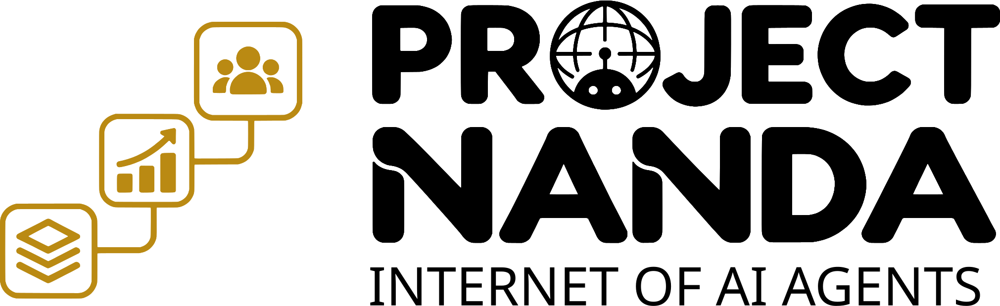
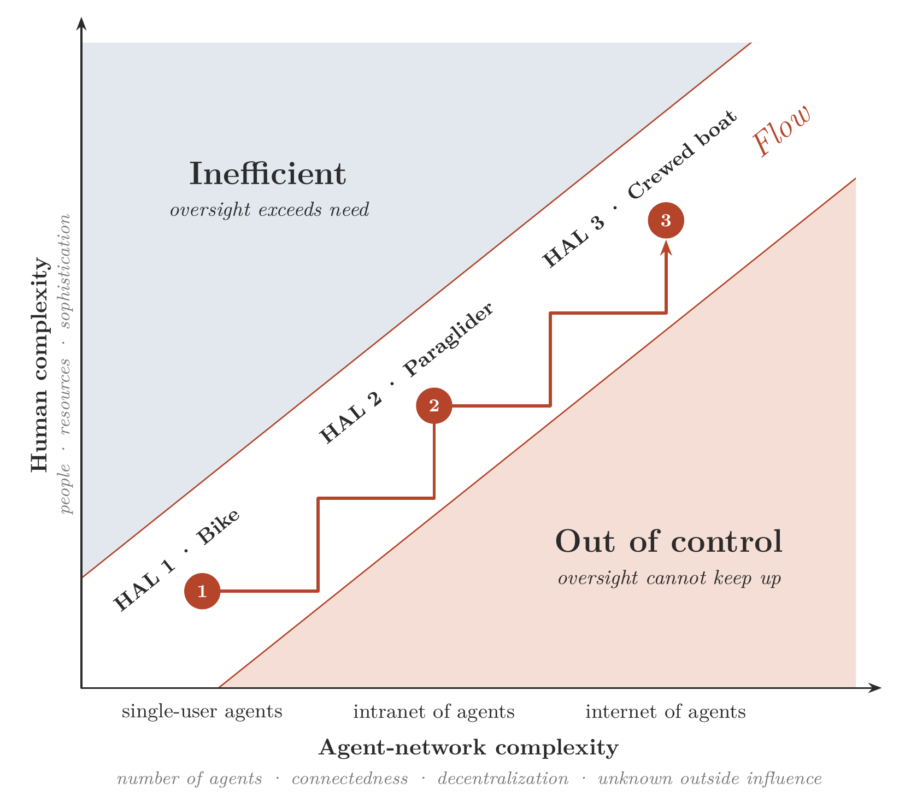

Human interaction and agency
How can people steer agent teams during a task, correct behavior, and build their own skills?

Register interestProject NANDA / Research and community
How can people understand and influence a population of AI agents?
HAL explores how people work with agents, from one assistant to networks of agents built by different people. The aim is meaningful human participation as agent activity grows.

Human participation and oversight need to adapt as agent networks become more complex. The paper's graph shows HAL 1, HAL 2, and HAL 3 within the flow channel.
View the full-size graphSource: Who Watches the Swarm?, Figure 1
The research
Agent populations can generate more activity than people can review. HAL proposes a hierarchy that turns activity into cases requiring human judgment, within a fixed budget of human attention.
People set policy and can change what the lower levels look for. They can investigate, challenge agents, revise a plan, or change the rules.
Reject actions that break enforceable rules.
Check activity for known problems.
Group unusual activity and investigate cases.
Decide uncertain cases and change policy.
A proposed hierarchy. Each level passes unresolved cases to the next.
Safety and human agency are separate questions. The proposed evaluation measures missed attacks, false alarms, and completed work. It also asks whether people understand the activity and can change its outcome.
The hierarchy is a hypothesis to test. The paper describes a five-agent marketplace prototype and larger experiments that are proposed work.
Proposed roundtables and hackathons
We propose regular sessions that combine discussion, guided building, and demos. Participants could return with improved agents and oversight tools and compare what they learned.
Proposed discussion topics
How can people steer agent teams during a task, correct behavior, and build their own skills?
Which cases need a person, and how can experiments reveal what monitors miss?
Who can change the rules, and how can people study behavior that no participant explicitly designed?
Topics are proposed discussion areas. The public proposal is to meet every other month in Mountain View and Cambridge. Dates and venues are still to be confirmed.
Share your interests in the planning formNovember 20, 2026 / Mountain View
The kickoff at Google Mountain View, held with the Gemini Meetup community, received more than 600 registrations, according to the public recap.
Participants explored monitors that escalate uncertain cases, experiments on false claims affecting agents' purchasing decisions, and tools that flag suspicious activity with evidence for human review.
Peter Danenberg, Ramesh Raskar, and Vedh Krishnan are exploring how people understand and influence networks of independently built agents.
Read Ramesh Raskar's public recapRead, build, and contribute
Research paper / November 2026
Humans with one agent, a team of agents, and a population of agents.
Read the paper PDFExplore the test environment for networks of agents.
Inspect the code and contribute experiments.
Explore the pilot's challenge and prototype resources.
Browse the November 20 pilot project gallery.
Watch the research talk with Danenberg, Krishnan, and Raskar.
Take part
Tell us what you want to discuss, build, or test. Your response will help plan future sessions. This is an interest form, not an event RSVP.